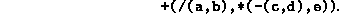
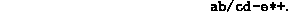
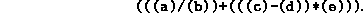
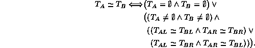
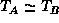

Data Structures and Algorithms
with Object-Oriented Design Patterns in Java
Data Structures and Algorithms
with Object-Oriented Design Patterns in Java
 show the order in which the nodes are visited during
the following tree traversals:
show the order in which the nodes are visited during
the following tree traversals:
.,, and.
is a recursive method.
Write a non-recursive depth-first traversal method
that has exactly the same effect as the recursive version. defines a visitor that prints
using infix notation
the expression represented by an expression tree.
Write a visitor that prints the same expression
in prefix notation with the following format:

,
but this time write a visitor that the expression
in postfix notation with the following format:

prints many redundant parentheses because it does
not take into consideration the precedence of the operators.
Rewrite the visitor so that it prints
rather than

. so that it applies to N-ary trees.
If , the trees are said to be isomorphic . Devise an algorithm to test whether two binary trees are isomorphic. What is the running time of your algorithm?
 Copyright © 1998 by Bruno R. Preiss, P.Eng. All rights reserved.
Copyright © 1998 by Bruno R. Preiss, P.Eng. All rights reserved.